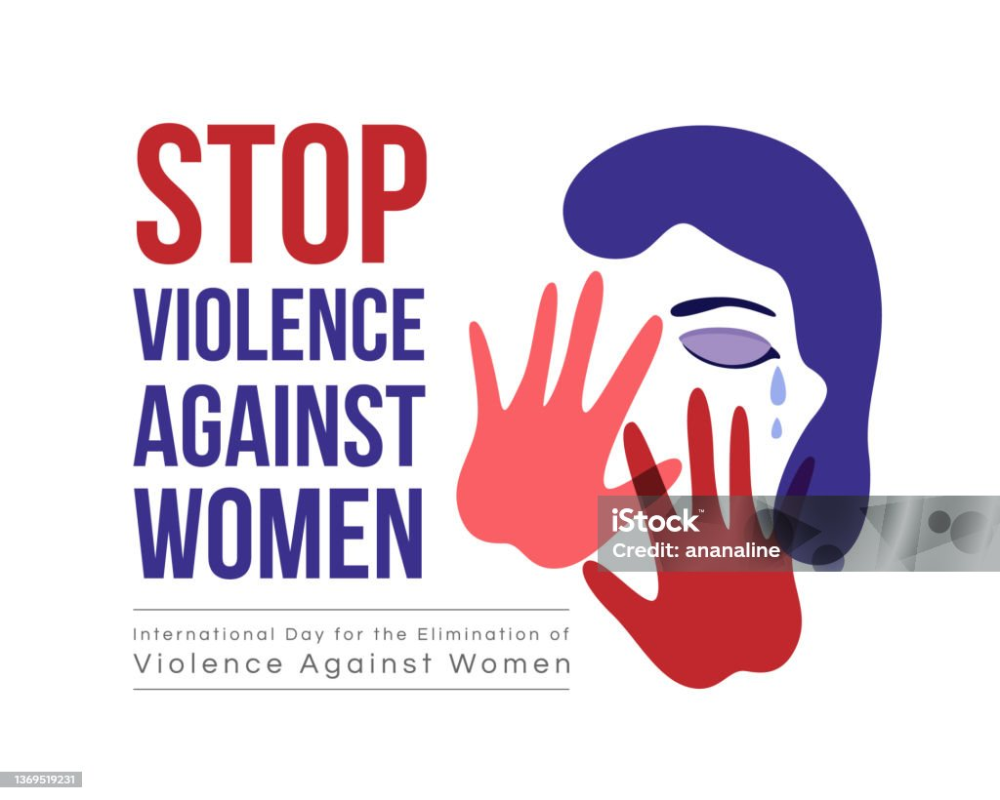
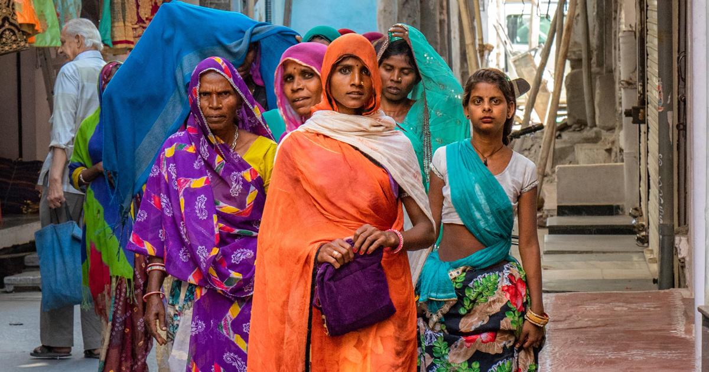
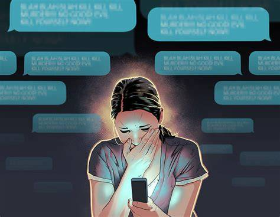
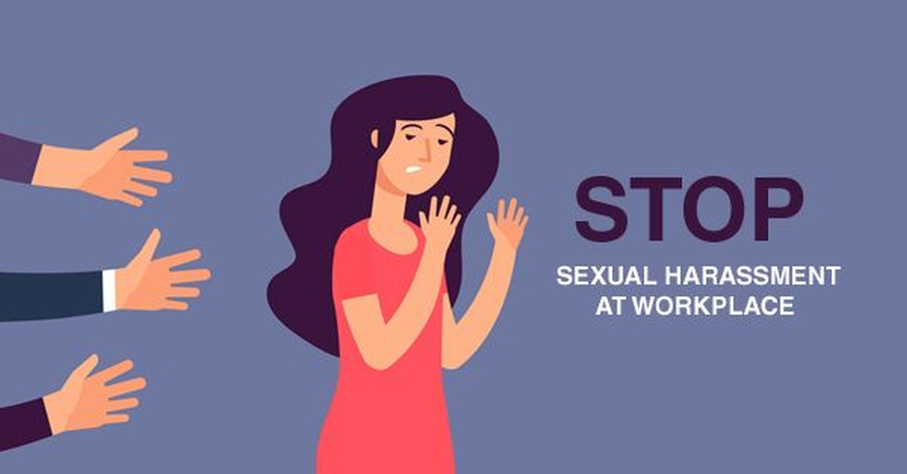
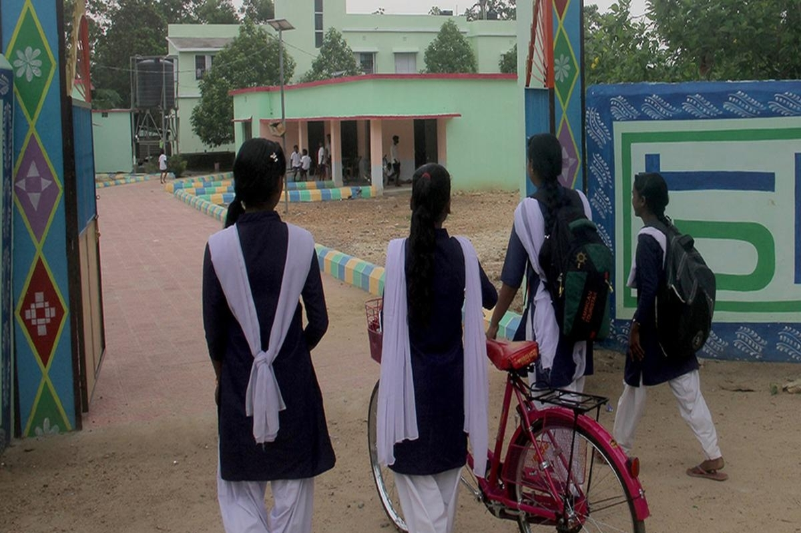

Breaking the Silence — Meera’s Domestic Safety Story

Background:
Meera, a 24-year-old newly married woman, lived under constant physical and emotional abuse from her husband. She was isolated from her family and friends and had no financial independence.Challenges:
She was afraid of societal judgment, had little knowledge of her legal rights, and no access to a safe place to escape the abuse.NGO’s Action:
Our domestic safety cell connected Meera to a women’s helpline and a nearby safe house. Legal counsellors guided her through filing a protection order under the Protection of Women from Domestic Violence Act (PWDVA). She also attended self-confidence workshops.Outcome:
After 6 months, Meera started rebuilding her life. With our NGO’s small business grant, she opened a tailoring unit and now mentors other women facing similar issues.Key Message:
Silence protects the abuser — speaking out saves lives.Safe Streets for Priya — Creating Fear-Free Zones

Background:
Priya, a 19-year-old college student, experienced repeated verbal harassment while walking home. The fear affected her studies and mental well-being.Challenges:
Many girls in her area faced similar harassment but felt helpless because incidents happened in public spaces without strong police presence.NGO’s Action:
Our NGO collaborated with the local police and municipal authorities to install streetlights and start a “Safe Streets” awareness campaign. We also introduced a “Safety Map” feature on our website where girls can mark unsafe zones.Outcome:
Street harassment cases in that area reduced by 70%. Priya now volunteers to teach self-defence sessions for other college girls.Key Message:
> A safe community begins when people stand up for one another.Riya’s Digital Courage — Fighting Cyberbullying

Background:
Riya, a 20-year-old engineering student, became a victim of cyberbullying when her private photos were edited and shared online.Challenges:
She felt ashamed, blamed herself, and avoided social media and classes out of fear. She didn’t know how to report the crime.NGO’s Action:
Our cyber safety team filed a complaint under the Information Technology Act (Section 66E and 67) and coordinated with cyber police to trace the offender. She was provided with a digital hygiene toolkit and mental health counselling.Outcome:
The offender was caught, and the posts were removed. Riya later joined our “Online Safety Ambassador Program” and conducts digital awareness sessions in her college.Key Message:
> The internet is for empowerment — not exploitation. Every girl deserves digital dignity.Rekha’s Workplace Rights — Standing Up Against Harassment

Background:
Rekha, a 29-year-old marketing executive, faced verbal harassment and gender-based discrimination from her senior manager.Challenges:
Fear of losing her job kept her from speaking up. Her office had no Internal Complaints Committee (ICC), violating the POSH Act (Prevention of Sexual Harassment at Workplace).NGO’s Action:
Our legal advocacy team helped Rekha understand her workplace rights and assisted her in filing a formal complaint under the POSH Act. The NGO also conducted awareness workshops at her company about gender sensitivity and workplace safety.Outcome:
The company took immediate disciplinary action against the offender and established a permanent ICC. Rekha regained her confidence and now leads “Women at Work” sessions through our NGO network.Key Message:
> Respect at work is not a privilege — it’s a legal right.Asha’s Emotional Healing — Finding Inner Strength
Background:
Asha, a 22-year-old college dropout, had endured years of emotional manipulation and control from family members. She suffered from anxiety and self-doubt.Challenges:
She wasn’t physically abused, but emotional abuse had affected her mental health deeply — something often ignored in many households.NGO’s Action:
Through our “Emotional Wellness Program,” Asha attended meditation, yoga, and self-awareness sessions. She was assigned a mentor and joined group therapy with other survivors.Outcome:
Over a year, Asha regained her confidence and rejoined college. She now volunteers as a peer counsellor, guiding others in recognising emotional abuse.Key Message:
> Healing doesn’t mean forgetting — it means growing stronger.Empowering Young Voices — The School Safety Campaign
